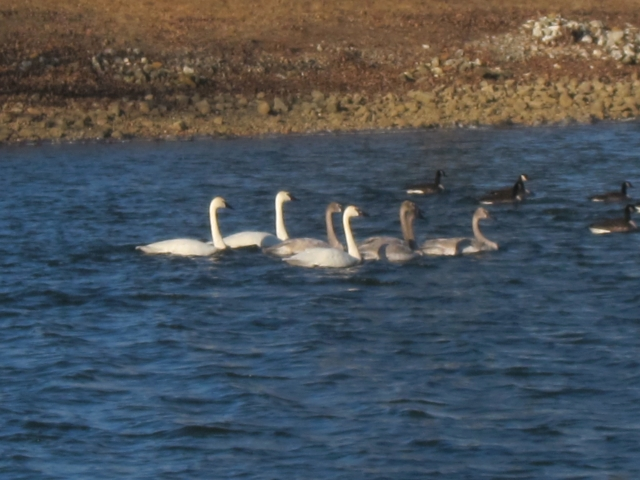

Little Swan Lake Club
Updated September 15, 2025
Welcome to the Little Swan Lake website. The lake is located 4 miles west of Avon, Illinois. Little Swan Lake is a private lake made up of members who either own or lease property and are represented by the Little Swan Lake Club Board who are elected by the members.
We welcome new people to our committees. Check out the volunteer opportunities by clicking on volunteers. If a member is interested in working on one of the committees, please contact the committee chair or any board member. Board Meetings are held the first Monday of the month at 7 PM.
Newsletters and Updates
- Read the most recent Little Swan Lake Newsletter. You may also click the News menu option.
- We have a new Ladies of the Lake newsletter. You may also click the Ladies of the Lake (Monthly News) menu option.
- IL News Release regarding Algae Bloom (06/08/2021)
- Check out the new Pendarvis mowing service and items for sale
(04/05/2021) The storage shed rules have been updated to accommodate a larger size shed. The new changes are: a storage shed can now be a maximum of 196 square feet with wall sides not to exceed 8 feet and the peak not to exceed 11 feet. If the lot owner wishes a larger shed, the structure will need to follow the permanent garage rules which include a foundation.
Fishing and Lake Updates
2023 LSL Fishing Regulations
Please read and obey all size and creel limits. Current boat sticker and fishing license are required.
| Species | Size | Limit |
|---|---|---|
| Bass | 10"–15" | Catch and release |
| Bass | Over 15" | Catch and release |
| Catfish | None | 6 per day |
| Bluegill/Sunfish | Under 8" | 25 per day |
| Bluegill/Sunfish | 8" and over | 5 per day |
| Crappie | Under 10" | No limit |
| Crappie | 10" and over | No limit |
| Walleye | 15" or larger | 3 per day |
| Northern Pike/Muskie | Catch and release | Catch and release |
Please dispose of any Carp or Green sunfish (rock bass) caught. Please do not put them back in the lake.
Little Swan Lake Fishing News 2023
Fishing is GREAT at Little Swan Lake! Please help us keep it that way.
In May 2023 a fish survey was completed by Austin Bennett - Fisheries Biologist with Herman Brothers Fisheries, Inc.
Species of fish from most to least: Gizzard shad 6-8" long introduced 8-12 yrs ago; Bluegill; Black & White Crappie 6-8.5"; Largemouth Bass 3-5 lb.; Catfish; Walleye; Carp.
Some facts & recommendations
- Crappie population is mostly older fish. The large fish compete with young bass & young crappie for food. So we can help by removing as many crappie as we can for the next 3 years.
- Bass under 10" numbers are low and are too skinny. So we can help by all of us using catch & release for all bass for the next 3 years. Take a picture & throw it back! LSL will stock more bass for next 3 years to help increase population for the future!
- Bluegill population is declining as gizzard shad population grows because of competition for food.
- Catfish young grow quickly to very large.
- Walleye not thriving partly caused by spillway - young fish get sucked out.
- Carp are very large - population is lower but need to keep in check + harvest some of the biggest.
Suggestion: Construct some fishing reefs in 10-15 ft. of water around shore to help create fish habitat.
If we all work for the next 3 years, our lake will be one of the best in Illinois. Thanks for helping. Pass the word!
Wildlife Sightings
Swans spotted on the lake - February 3, 2017

Guest-Owner Responsibilities
As stated in the Little Swan Lake Club (LSL) Covenants, it is the responsibility of the Little Swan Lake Member to make sure that guests are aware of and abide by all the rules and regulations of Little Swan Lake as well as state and local laws and regulations. The LSL rules are posted on our web site http://littleswanlake.net. Below are a few requirements of special note for guests to use the LSL facilities, including the lake. Most of these are listed also in the various specific sections with more detail, but are gathered here for convenience.
- Clubhouse: the LSL member reserving the clubhouse must be present during the event.
- Fishing: a LSL member must be present when a guest is fishing either in a boat or on the shoreline, unless the shoreline is the member's property. The fisher must be properly licensed by the State of Illinois in all cases.
- Boating: a LSL member must be present at the lake when a guest is using the member's motorized boat. No guest boats are allowed.
- Other sport use: a LSL member must accompany the guest when snowmobiles, 4-wheelers etc. are used on any LSL property, including the lake. No vehicles are allowed on the dam without express permission of the LSL board.
- Swimming: it is fine for guests to swim no further than 100 feet from shore off a member's property with no member present. There is no swimming off boats in the Wake Zone or off outlots. When swimming off a member's boat in the no-wake zone a member must be present at the lake.
Swimming Rules in the No Wake Zone
- Boats must be anchored and motor turned off.
- Boats must stay in the center of the no wake zone, not in the traffic lanes.
- Swimming will only be allowed from 30 minutes before sunrise until 30 minutes after sunset. Note: if you are swimming within 100' of your own shoreline property there are no hour restrictions.
- Swimmers must stay within 30' of the boat.
- A responsible person, 18 years or older, must stay in or be tethered to the boat.
- No diving allowed.
- Be sure to inform anyone in your boat of these rules. Be smart - be safe!
- Updated 5/7/2018.
Rules will be strictly enforced with a minimum fine of $25 for the first offense and repeated offenses could lead to loss of lake privileges.
Important Boating Reminders
Tubing or Skiing - There is a new law which requires a flag flying at the highest part of your boat while pulling tubers or skiers or when they are in the water. While skiing or tubing, be sure to have a responsible spotter; the driver cannot be considered a spotter. Boat in a counter-clock-wise pattern. Children under 13 must wear life preservers. Lights must be used after dark and boats are restricted to a no-wake speed after dark. (added 8/4/2020)
- Two persons are required to be aboard a boat when engaged in towing any person participating in a water sport. (Sec. 15, Illinois Regulations)
- Ski boat operators are advised not to trail tow ropes in the water except when returning for a fallen skier. Other boaters are cautioned against crossing the ski boat's wake closer than 100 feet to the boat. Each boat operator is responsible for his/her own dropped loose skis.
- Allow up to 2 tow ropes and a maximum of up to 3 persons in any combination of up to 2 towables built to accompany such.
- Children 13 years old and under must wear a life jacket when in a boat that is not tied to a dock.
- Boat traffic shall be in counter-clockwise pattern.
- State law places restrictions on motorboat operators between the ages of 12 and 17. Such persons must operate the boat under the supervision of a parent, guardian or someone at least 18 years old that has been designated by a parent, or must hold a Boating Certificate issued by the State Department of Natural Resources. Such certificates can be earned by taking an 8 hour boating safety course approved by the department, and offered by organizations, school systems and volunteers throughout the state. The new law also bars anyone age 9 or under from operating a motorboat, and requires anyone at 10 or 11 to have a parent, guardian or someone over age 18 aboard.
Boat Ramp Parking - Please be sure boat trailers are parked at the ramp area rather than at the Clubhouse. The Clubhouse is often reserved for other functions and the parking spaces are needed. One or two trailers can take up a lot of parking spots. We realize at times additional trailer parking could be used and we are considering options in the Long Range Planning Committee. Anyone interested in working on the project, please contact a Board Member.
Rules and Regulations
December 2015
The Committee on Rules and Regulations has reviewed the current rules and has made several recommendations to the membership. These changes include removing duplicate or redundant information, making it readable by using common language, and updating incorrect information and rules.
Membership & Boating Forms
November 2017
The membership and boating forms will be sent out in January. If you have not received the documents or are new to Little Swan Lake, you may download the forms on our forms page or please send an email with your request to Sharon Hundley (LSLClerk@hotmail.com).
Recycling
September 2025
Recycling Information Eagle Enterprises
Recycling Drop-Off
Items Accepted
- Newspaper
- Magazines
- Cardboard, cereal & Kleenex boxes
- Office paper, junk mail
- Telephone books
- Hardback & paperback books
- Aluminum cans & foil
- Aluminum scrap (lawn chairs, siding)
- Steel or tin cans
- Light steel (coat hangers, bicycles, etc.)
- Plastics #1 - 7, except #6 (look for the number inside the recycling triangle)
- Bags of plastic grocery bags (#2 or #4), bubble wrap
Containers must be free of food waste.
Not Accepted
- Plastic bags
- Glass
- Styrofoam (#6)
- Wax cardboard (milk and juice cartons)
- Construction paper
- Paper towels & Kleenex
- Paint
- Electronic equipment
- White goods (washer, dryer, stove, etc.)
- Household garbage
- Plastic toys